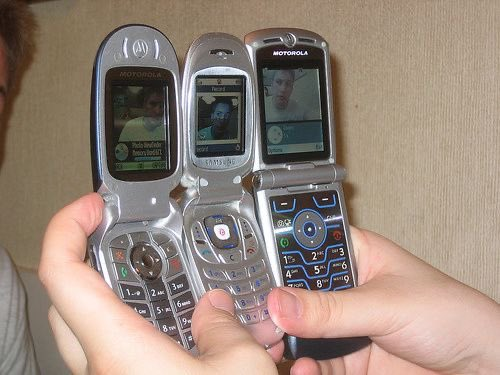

one roll, flip, two roll, 20x35 / Hand in an intimate grid
Rasim Bayramov

Yesterday I found myself with my back hurting and my hands floured and oily. I found myself making pakhlava, a
version of baklava, but one that I remember the most. One that is shaped like a rhombus and has many layers of
slightly thicker dough, parallel sides, and two equal angles. The buttery smell takes up more space than it
needs in the spring. If someone were to ask me how to make one, I wouldn’t have an answer but a picture on
my phone.
Yesterday, I found myself talking to my mom on WhatsApp through video, her pixelated mouth moving around in
circles and guiding me on how to make a 20x35 sheet of pakhlava. Not like the instructions on Youtube or
Instagram, but her own way. Her low-quality image enclosed in a floured pale blue phone case, leaning on a paper
towel holder in the kitchen. I tell her, “I don’t want this to be perfect, It’s fine if
it’s a bit ugly.” To which she replies, “&%*(&^&$8.._.It’s
your first time
making this. I didn’t have anyone guiding me back then. You have me, so don’t worry, my
love.”
Her voice gets interrupted by the AC. “Thanks, mom,” I say, and continue mixing up
grounded walnuts,
sugar, and just a pinch of cardamom.
Yesterday, I had no idea how time consuming and hard on the body it was going to be—I still had 24 steps
to follow. My mom always has some kind of protocol in her gridded recipe notebook she has been keeping since she
was seventeen. Countless rituals in the kitchen are explained in detail, some illegibly written only understood
by her. When the filling is ready, she tells me to put it into a bowl and set it aside, so I balance it near the
microwave on the edge of the countertop. Now I need to start making the dough. I get the flour, eggs, milk,
salt, and sugar and put them on the counter. My phone slips and falls, landing facing upwards on the counter. My
mom is looking at the bottom of the kitchen cabinets right now. I pick the phone up and lean it against the
french press near the towel holder. “I was wondering where you went (laughter),” she
says. I reply,
“I’m here, I’m here.” She tells me to mix the dry and the wet separately. Her
voice
travels from one cable to another. Then mix them together. Knead the mixture to form a dough.
The moment I put my hand inside the mixture, my hands are clasped by the dough. They feel sticky, but also
heavy. I raise my hand up to show my mom what the dough is like. She’s on the top counter now leaned
against a box of cheese crackers. “This is probably the only moment I am your height
now.” I laugh
and notice the dough slowly dropping into the bowl. I knead the dough for a bit more. I’m tired, but the
dough is close to being ready. A land of flour and water, the waves washing the dunes. The waves pushed by
winds. The hand creating the wind. The hand that sticks. The palm that squishes. Tiny gluten clouds form. The
hand moves away, stripping some of the land as well. Taking a piece for myself, and then putting it back in.
“I hate kneading dough,” I complain,“I don’t like how it sticks and
grasps me. Then I
can’t get rid of the little bits.” Through 210ms ping, wifi, Verizon, cables, apps, she
says,
“Just continue, there isn’t much left. Just remember how good it will taste and that’s
enough.” I tell her I will call her in 30 minutes. I put the dough aside to rest. I do the
same.
I think about the shape it will take, the grid of rhombi. With a walnut in the middle of each shape. Layers of
thick dough, dough, filling, dough, filling, dough, filling, dough, filling, dough, thick dough. The repetition
of steps. A space for little mistakes and a ritual of sweetness. Sweetness that comes from what the yellowed
recipe notebook holds on its grids and speaks page by page. And pages that hold a care that is shared through
retelling and transposition of words. Words that move bodies in a sequence. I stretch a little downwards, to the
left, to the right. I rotate my arms, clockwise, counter-clockwise. My joints hurt and I haven’t started
making the sheets yet. I listen to what my bones have to say and while they scream for rest I will start rolling
the dough soon. Dough is a ritual, it is sacred and it demands care. I depart for the dough. I call my mom
again.
“Hi my soul” she greets me again. “Hi mom,” I reply. I put the
phone on a weird angle,
on top of the paper holder this time, so she can see me work. I don’t see, but hear her. I flour the
surface. And in circles, I spread the flour around. Dunes of flour nestled on granite. I take the dough piece
and start rolli. “Stop, stop. You need to flour the pin too. Or it will stick,” she
says. I flour
the pin, spreading it through its cylindrical shape. I start rolling. One roll, 9x10. Two rolls, 13x14. Flip,
Three rolls, 17x15. Four rolls, 18x19. Five rolls, I stretch, Five rolls, 20x22. Six rolls, 21x22. Seven rolls,
22x23, Eig—“You’re pressing too hard, don’t put too much pressure or it will
tear,” she
says. Eight rolls, 25x28. Nine rolls, 25x32. I’ll cut the excess piece. I roll the sheet onto the pin, my
arms bringing the pin towards me. The sheet hangs from the pin. Gluten curtain. I lay the curtain onto its
buttered bed. It folds, I clear its folds. I cut the excess piece and form it into a ball. I mix my hand inside
the filling, walnut sand on my skin. I spread some onto the sheet. And onto the next sheet.
Make sure to put the— What? I raise the phone’s volume, her image shakes a little as I push the volume up button.
Low battery 20% of battery remaining. DismissMake sure to put the filling evenly! Okayyy.
One roll, 5x6.
Two rolls, 11x11.
Flip, Three rolls, 19x17.
Four rolls, 17x19.
Flip, Five rolls, 20x21.
Six rolls, 20x22.
Seven rolls, Flip, 21x25.
Eight rolls, I stretch, Eight rolls, 24x26.
Nine rolls, 22x31.
One roll, 6x4.
Two rolls, 8x11.
Flip, Three rolls, 17x18.
Four rolls, 18x21.
Flip, Five rolls, 22x21.
Six rolls, 23x24.
Seven rolls, Flip, 19x20.
Eight rolls, I stretch, Eight rolls, 21x25.
Nine rolls, 22x29.
Ten rolls, 23x30
One roll, 9x4.
Two rolls, 11x7.
Flip, Three rolls, 18x15.
Four rolls, 15x21.
Flip, Five rolls, 23x20.
Six rolls, 23x19.
Seven rolls, Flip, 20x21.
Eight rolls, I stretch, Eight rolls, 24x26.
My phone dies. I go to my room and bring my charger. I plug my phone in. 1 minute and 4 seconds pass. I enter my
passcode. I open WhatsApp. I call my mom back. She’s drinking tea.
One roll, 7x8.
Two rolls, 11x13.
Flip, Three rolls, 20x18.
Four rolls, 16x15.
Flip, Five rolls, 17x17.
Six rolls, 22x19.
Seven rolls, Flip, 21x25.
Eight rolls, I stretch, Eight rolls, 25x27.
Nine rolls, 27x31.
Ten rolls, 25x31.
Eleven rolls, 26x32
One roll, 4x3.
Two rolls, 8x6.
Flip, Three rolls, 14x13.
Four rolls, 18x19.
Flip, Five rolls, 22x24.
Six rolls, 22x26.
Seven rolls, Flip, 25x31.
I finish rolling. Pakhlava welded my joints into one. Now it’s just about baking. She tells me,
“240
for 20 minutes, rest, then 180 for 1.5 hours.” I need to rest. “Aren’t you
sleepy?” I
ask. How did she even manage to do this every spring? “Don’t worry, I’ll go to bed
soon,” she replies. “Okay, I’m hanging up but I’ll talk to you in the
evening,
okay?” I say. She nods, and we hang up. I bake the pakhlava and sit with it till it cools down.
I stare at
the rhombus grid in front of me. I pour some syrup in the crevices of the grid. The sharbat glistens the sweet.
How can a smell be warm? How can nourishing be a protocol? Or is the repetition of steps a ritual? My body
wouldn’t know better, it's been repeating the same steps over and over. It forgets the shape of pakhlava
sometimes. Its circuitry updates not regularly, but it updates for better or worse. My body: a rhombus of
walnut, syrup and dough. My body: a rhombus of screws, cables and boards. I move my arm to move the electronic
rhombus around me. In a grid of stickiness, the glistening creates a connection to a familiar rhombus I know.
“I’m not a pakhlava, Rasim. You’re thinking too much,” she will say.
Yesterday, I found
myself looking for a connection.
Rasim Bayramov (they/them) is a designer born near the Caspian shore in Baku, Azerbaijan. Inviting others to
connect with the unknown through rituals, their work uses the human body as an interface for a link. A link that
goes through bodies of nature, objects of use, everyday experiences, technology and memory. An ever changing
scale that carries weights of culture, social structures, gender and post-colonial reality, balanced at times
with collectivity and participation. These ideas find themselves in websites, installations, print, videos,
performances and sculptures. They received their BSc in Industrial Design from the Middle East Technical
University and are currently pursuing their MFA degree at Virginia Commonwealth University.